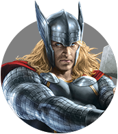

Тор

СПОСОБНОСТИ Тора:
Нечеловеческая сила,Волшебный молот Мьельнир,Способность летать,Удлинённый период жизни,Управление погодой,Создание молний,Повышенная выносливость.
Тор — дитя союза Одина, владыки Асгарда, и Геи, богини Мидгарда (Земли). Тор появился на свет в одной из норвежских пещер, откуда Один забрал его на воспитание в Асгард. Тор провёл детство со своим приёмным братом Локи, который постоянно ему завидовал и, в конце концов, вздумал убить брата. Так началась их многовековая вражда.
Когда Тору исполнилось восемь, Один сделал для него Мьёльнир — молот, наделённый невероятной магической силой. Однако право обладать им Тор должен был заслужить, и только спустя годы упорных тренировок и славных подвигов он доказал, что достоин этой великой чести и был провозглашён великим воином Асгарда.
Почти безграничные возможности не могли не повлиять на характер Тора. Его высокомерие и упрямство чуть не стали причиной войны с ледяными великанами, которая подвергла бы Асгард величайшей опасности. В наказание за этот проступок Один изгнал сына на Землю, лишив его божественной силы.
Когда Тор осознал свои ошибки и в очередной раз доказал своё право носить Мьёльнир, Один разрешил ему вернуться домой. Однако Тор решил остаться на Земле, потому что чувствовал невероятную тягу к людям. Теперь, заполучив «двойное гражданство», Тор помогает людям на Земле и народу Асгарда, а также является одним из самых могущественных участников команды Мстителей.
Сын двух могущественных богов, Тор обладает невероятной силой и выносливостью даже в сравнении с другими жителями Асгарда. Кроме того, Тор может управлять погодой и вызывать молнию. Мьёльнир только усиливает его возможности, делая его непобедимым противником. Молот всегда возвращается к Тору, враг не может им завладеть, ведь поднять Мьёльнир может только тот, кто достоин править Асгардом.
Капитан Америка

СПОСОБНОСТИ Капитана Америки :
Усиленные физические характеристики,Эксперт по военному делу, Навыки рукопашного боя,Превосходный атлет,Стратегическое мышление
Во время Второй мировой войны юный Стивен Роджерс согласился на участие в сверхсекретной экспериментальной программе по созданию суперсолдат, которая превратила его в непобедимого Капитана Америка – живой символ свободы. Проведя много лет замороженным во льдах, легендарный герой вновь очнулся, чтобы продолжить битву за справедливость.
Стивен Роджерс с детства отличался хрупким телосложением и слабым здоровьем, поэтому его упорные попытки попасть в армию в начале войны не увенчались успехом. Однако они не остались незамеченными, и Роджерс стал участником секретной операции «Возрождение» – проекта по созданию суперсолдат с помощью сыворотки, которая доводит физические способности человека до пика.
Профессор Авраам Эрскин, разработавший сыворотку, увидел в маленьком худом Стиве исключительные качества – отвагу, чувство долга, способность к самопожертвованию, и выбрал его для первого эксперимента. После инъекций сыворотки Стив Роджерс подвергся воздействию вита-лучей, которые активировали и стабилизировали вещество в его организме. Во время эксперимента в лабораторию проник нацистский агент, который убил профессора Эрскина, а вместе с ним и возможность воссоздать формулу сыворотки.
Стив Роджерс стал агентом контрразведки и символом борьбы против нацистской Германии. Он получил красно-бело-синий костюм, созданный по его собственным эскизам, и кодовое имя – Капитан Америка.
Стив и его верные союзники спасли множество жизней, обезвредили немало злодеев и сумели изменить ход войны. Во время своей последней военной миссии Капитан Америка пропал в ледяных водах Северной Атлантики и после долгих безуспешных поисков был объявлен погибшим.
Тело Стива Роджерса было обнаружено во льдах спустя много лет –герой все это время находился в состоянии анабиоза. Капитан Америка чувствует себя потерянным в современном мире, но его сила и лидерские качества помогают ему быть живой легендой, символом чести, доблести и мужества и стоять во главе команды могучих Мстителей.
Сыворотка многократно усилила его физические характеристики и личные качества, наделив Капитана Америка развитым интеллектом, силой, ловкостью и выносливостью. Его единственным оружием стал щит в форме диска, сделанный из сверхпрочного сплава стали и вибраниума. Капитан Америка отличается непоколебимым характером и силой духа.
Железный Человек

СПОСОБНОСТИ Железного человека :
Гениальный интеллект,Обширные знания во многих областях науки, Выдающийся изобретатель и инженер,Кибернетическая связь с бронекостюмом,Мастер рукопашного боя,Большие финансовые возможности
Тони Старк – сын богатого промышленника и изобретателя Говарда Старка. Его родители погибли в автокатастрофе, когда Тони был 21 год. Унаследовав компанию отца «Старк Индастриз», он вывел ее в лидеры по производству оружия. Когда Тони Старк приехал в Афганистан, чтобы лично присутствовать на тестовых испытаниях, его отряд подвергся атаке террористов, и раненый шрапнелью миллиардер попал в плен к оружейному барону Вонг-Чу.
Глава террористов обещал оставить Старка в живых, если тот изготовит для него оружие массового поражения. Тони согласился на сделку в надежде выиграть время и получить доступ к необходимым материалам. В работе ему помогал другой пленный учёный, известный азиатский физик и лауреат Нобелевской премии профессор Хо Инсен, чьи работы вдохновляли Старка в колледже.
Вместе они создали боевой костюм с генератором магнитного поля, который защищал сердце раненого Старка. С помощью костюма Тони удалось сбежать из плена, в то время как Хо Инсен пожертвовал собой, выиграв для него время. Вернувшись домой, Тони Старк занялся усовершенствованием костюма и магнитного генератора, от которого полностью зависела его жизнь.
По этическим соображениям Тони прекратил заниматься производством оружия и сосредоточил деятельность компании «Старк Индастриз» на создании новых технологий, которые служат на благо человечества. Он создал множество благотворительных фондов, и, чувствуя все большую ответственность перед миром, решил раскрыть тайну своей личности и признаться, что он и есть Железный Человек.
Тони Старк прекрасно знает себе цену: он одновременно является и спонсором Мстителей, и одним из важнейших участников команды. Он кажется самовлюблённым и постоянно нарушает правила, но он делает это ради достижения своей главной цели – спасения жизни людей.
Созданный Тони Старком высокотехнологичный костюм Железного Человека многократно увеличивает человеческие характеристики. В костюме Железного Человека Тони Старк способен поднимать до 90 тонн, броня защищает его от ножевых и пулевых ранений. Встроенное вооружение костюма состоит из многочисленных пушек, лазеров и ракет, а репульсоры в ботинках и перчатках позволяют Железному Человеку летать. В костюм также встроена встроена операционная система, напоминающая искусственный интеллект, с помощью которого, Тони может связаться со спутниками или штабом Мстителей.
Тони Старк разработал множество моделей своего костюма для разных целей. Так, например, один из них полностью предназначен для стелс-операций, а другой позволяет передвигаться в открытом космосе.
Социальная сеть: